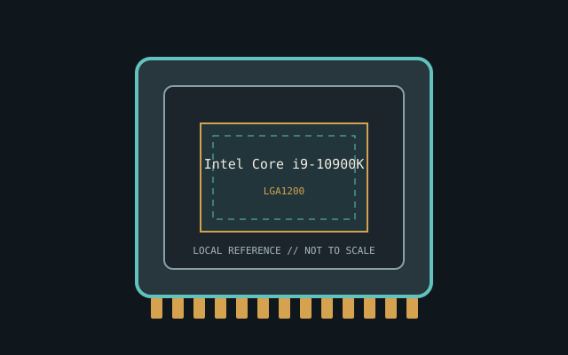

[ INDIVIDUAL CPU COMPONENT ]
Intel Core i9-10900K
Comet Lake-S, 2020; 10C/20T, 3.7 GHz base, up to 5.3 GHz TVB, 20 MB, 125 W Model-specific record; confirm the complete part marking before installation.

IDENTIFICATION: Intel Core i9-10900K. Product name alone does not establish package, stepping, voltage or firmware compatibility.
Verified model specifications
| Catalog path | Intel → Core desktop generations |
|---|---|
| Model and compute | Comet Lake-S, 2020; 10C/20T, 3.7 GHz base, up to 5.3 GHz TVB, 20 MB, 125 W |
| Package / socket | LGA1200 |
| Compatibility | 400/500-series BIOS, cooling and power delivery |
| Stepping and variants | Boost varies by temperature, workload, firmware and limits; verify S-spec |
Compatibility and service
- 400/500-series BIOS, cooling and power delivery
- Boost varies by temperature, workload, firmware and limits; verify S-spec
- 125 W TDP is not peak package limit; note board settings
- Confirm board manual, exact CPU support list, firmware, voltage/power, memory and cooling before use; never force a package.
Service & archival notes
125 W TDP is not peak package limit; note board settings
Photograph package, markings, contacts and date/lot codes before repair. Log host board, BIOS/microcode, memory, cooler, condition, provenance and source revision.
Sources & further reading
- Intel ARK — Intel Core i9-10900KManufacturer specifications; search exact model and package S-spec.
- Intel processor architecture manualsManufacturer reference for architecture and instruction behavior.
Manufacturer documents take precedence. Family-level references may not resolve every stepping; verify the marking and motherboard CPU list.